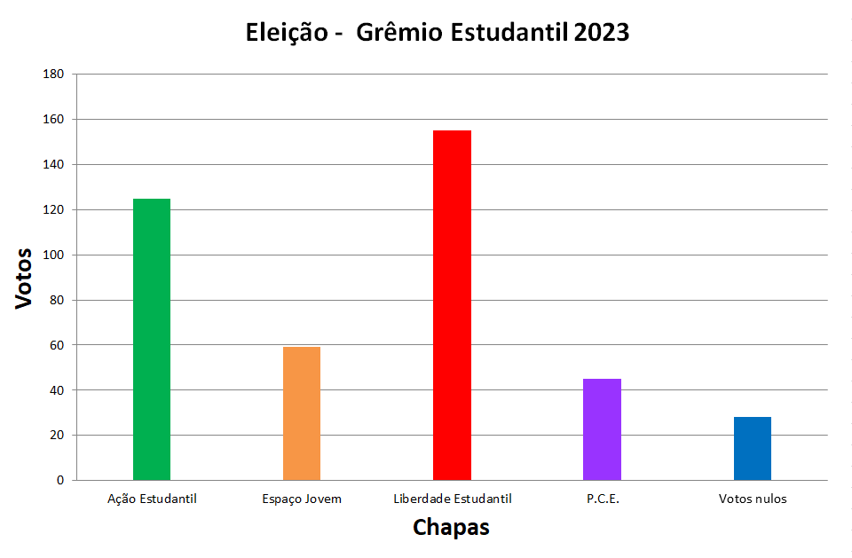
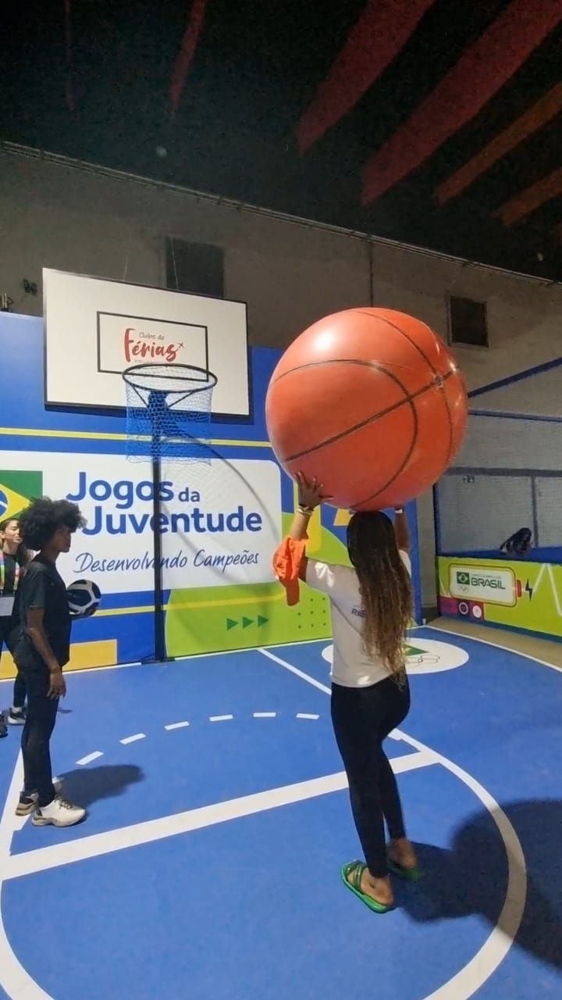
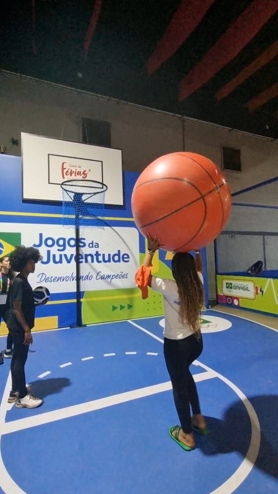

ALUNOS DA RECUPERAÇÃO PARALELA REALIZAM ENTREVISTA COM CHAPA VENCEDORA DA ELEIÇÃO PARA O GRÊMIO ESTUDANTIL
No começo deste ano, a escola promoveu a eleição da chapa de grêmio estudantil. A chapa vencedora foi a “Liberdade Estudantil”, composta em sua maioria por alunas do 7° ano da escola.
Em entrevista, os alunos da recuperação paralela realizaram perguntas e tiraram dúvidas frequentes sobre a atuação da chapa e sua função na escola.
Alunos: Explique o que é uma chapa de grêmio
Grêmio: É uma liderança mais próxima dos alunos, que ajuda a resolver os problemas da escola.
Alunos: Vocês vão melhorar a escola?
Grêmio: Sim, vamos fazer o melhor pela escola. A gente vai fazer o possível pelo desempenho deles [alunos].
Alunos: Vocês vão pedir ar-condicionado?
Grêmio: Já compraram ar-condicionado. Mas não instalaram por causa da fiação elétrica.
Alunos: Haverá festa junina?
Grêmio: Sim. A gente vai tentar fazer uma festa junina para eles [alunos], porque o Christian [diretor] disse que vai ter um sábado letivo de festa em junho.
A gente vai tentar adicionar mais coisas legais para eles: dança, música, coreografias e barraquinhas.
Alunos:O que o grêmio vai fazer pela escola?
Grêmio: Nós queremos a limpeza das quadras para os alunos, retirar as pedras e folhas. Isso para ninguém se machucar.
O grêmio não é só para ajudar na limpeza. Vamos trazer diversão: música e dança na hora do recreio, gincana, abrir a biblioteca no intervalo, festas e cultura.
Nós vamos tentar arrumar as portas e os vasos dos banheiros.
Alunos:Existem ações planejadas contra a violência?
Grêmio: Nós vamos tentar trazer o conforto e a diversão que eles [alunos] merecem para não ter essa insegurança.
Alunos:A chapa se elege por quanto tempo?
Grêmio: Por dois anos

 
